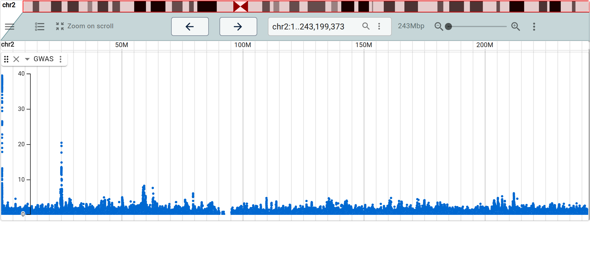

JBrowseR provides an R interface to the JBrowse 2 genome browser. It renders the interactive, GPU-accelerated JBrowse 2 linear genome view as an htmlwidget, so you can embed a full genome browser in an R Markdown document, a Shiny app, or straight from the R console.
The API is declarative: you describe the browser with plain values, and helper constructors build the config. There are no JSON strings to assemble and nothing imperative to wire up.
library(JBrowseR)
# an entire human genome browser in one line — assembly, reference name
# aliases, cytobands, and gene-name search all included
JBrowseR("hg38", location = "BRCA1")Installation
Released version from CRAN:
install.packages("JBrowseR")Development version from GitHub:
# install.packages("remotes")
remotes::install_github("GMOD/JBrowseR")Quick tour
Point at a hub genome by name and add tracks by URL — the track type and its index files are inferred automatically.
JBrowseR(
"hg38",
tracks = tracks(
track(
"https://jbrowse.org/genomes/GRCh38/alignments/NA12878/NA12878.alt_bwamem_GRCh38DH.20150826.CEU.exome.cram",
name = "NA12878 Exome"
)
),
location = "17:43,044,295..43,048,000"
)
View results you computed in R directly on the genome — no files, no web server:
peaks <- data.frame(
chrom = "17",
start = seq(43000000, 43120000, by = 12000),
end = seq(43000000, 43120000, by = 12000) + 4000,
name = paste0("peak", 1:11),
score = round(runif(11, 5, 100))
)
JBrowseR(
"hg38",
tracks = list(track_data_frame(peaks, "R_peaks")),
location = "17:43,000,000..43,125,000"
)
A track’s display can plot its data — a GWASTrack with a LinearManhattanDisplay draws genome-wide summary statistics as a Manhattan plot in the linear view, no separate plotting widget needed:

Compare whole genomes with JBrowseRApp() — several assemblies stacked, the blocks each pair shares drawn between the rows (here four E. coli strains tied by one all-vs-all alignment), or the same alignment as a whole-genome dotplot. See the comparative synteny vignette, or run it on Colab: 


Try it live
The figures above are screenshots so the package stays inside CRAN’s size budget, but the website hosts the same browsers as real, interactive widgets — pan, zoom, and click features in the page:
- Live embedded browsers — a hub genome, a custom FASTA, an R data frame as a track, and a GWAS Manhattan plot
- Comparing genomes, live — a linear synteny view and a dotplot
For the Shiny side, JBrowseR demos is every example app in one place — gene search, a data frame as a track, a slider that re-runs the analysis, SKBR3 structural variants, a whole config.json, and a plugin.
Getting started
See the vignettes:
- Introduction — the declarative API and a gallery of demos
- Custom browser tutorial — build a browser for your own assembly and data
- Hosting data — CORS + range-request requirements, and viewing local files
- Full JSON config — the escape hatch for complete control
Citation
If you use JBrowseR in your research, please cite:
Hershberg et al., 2021. JBrowseR: An R Interface to the JBrowse 2 Genome Browser
For developers
The R package ships a prebuilt JavaScript bundle in inst/htmlwidgets/. To rebuild it against a local checkout of jbrowse-components (expected as a sibling directory), install pnpm and run: